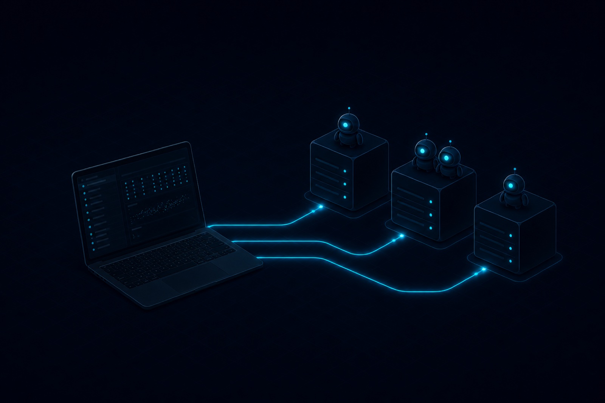

Architecture

How it works
A local two-pane tmux workspace drives everything: the navigator speaks SSH to each host, and every attached session is a supervised, reusable connection pane.
One terminal. Every cluster.
A dependency-free TUI for tmux sessions spread across SSH hosts.
pipx install clustermux

A scripted replay of the real workspace: sessions live under their clusters on the left — drop into a long-running Codex conversation, rename it, fork it. Never a manual tmux command.
Long-running agents on remote GPUs shouldn't die with your laptop lid. clustermux keeps every session visible and one keystroke away.
One dashboard for every host — reachability, latency, running command and working directory, queried over SSH at once.
Each attached session lives in a hidden local tmux window. Detach, re-attach, switch hosts — the remote work never notices.
Promote any session to its own tab with o. The tab supervises the SSH link and auto-reconnects after network drops.
Clone a live Codex session into a new tmux with f — clustermux finds the active rollout thread via /proc and runs codex fork.
clustermux --init scans your SSH config, installs your key where it's rejected, and writes the hosts file. --check verifies it all.
A single Python file on the standard library. No pip packages, no daemons, nothing running on the remote hosts but tmux.
A local two-pane tmux workspace drives everything: the navigator speaks SSH to each host, and every attached session is a supervised, reusable connection pane.
pipx, pip, or a single-file download — your pick.
pipx install clustermuxcurl -L -o ~/.local/bin/clustermux https://raw.githubusercontent.com/lyttttt3333/clustermux/main/clustermux.py && chmod +x ~/.local/bin/clustermuxScans your SSH config and known_hosts, installs your key where needed, writes hosts.json.
clustermux --initOpens the manager workspace in a new iTerm tab. --check verifies your setup any time.
clustermux| Key | Action |
|---|---|
| ↑ ↓ | move between clusters and sessions |
| Enter | attach the selected session in the right pane |
| b / t | remote Bash shell / new empty tmux on the cluster |
| f | fork the selected Codex session into a new tmux |
| e / x | rename / kill the selected session |
| o | hand off to a standalone iTerm tab (auto-reconnects) |
| Shift+← | jump back to the sidebar from the remote pane |
| q | close the workspace — remote sessions keep running |